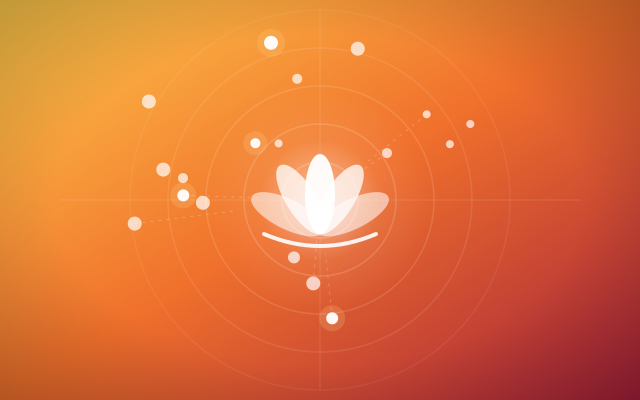
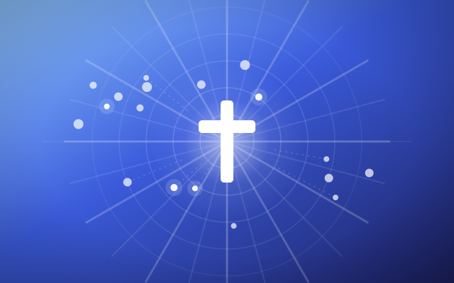
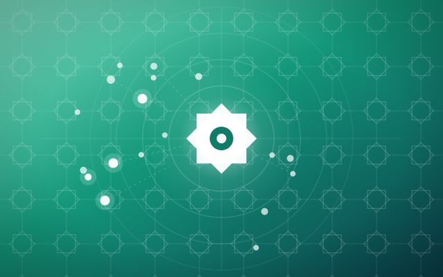
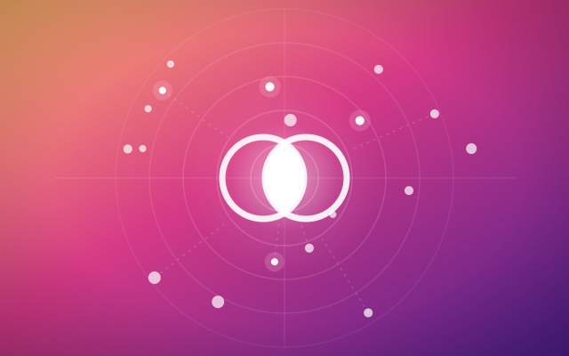
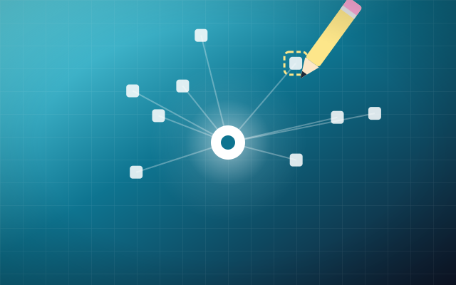

Der nahe Feind
Gleichgültigkeit sieht aus wie Gleichmut. Buddhaghosa nennt solche Doppelgänger „nahe Feinde“: Sie sind gefährlicher als das offene Gegenteil.
Visuddhimagga IXManche Ansichten liegen so dicht an der echten Einsicht, dass man sie kaum unterscheiden kann. Gerade deshalb führen sie in die Irre. Diese Karten zeigen 84 solcher Beinahe-Treffer aus Buddhismus, Christentum, Islam und heutiger Nondualität, jeden mit dem Echten, das er nachahmt.
Die Idee
Ein Near Miss ist kein Gegenteil. Er hat ein Körnchen Wahrheit, und doch landet er knapp daneben. Die großen Traditionen haben dafür eigene Namen gefunden.
Gleichgültigkeit sieht aus wie Gleichmut. Buddhaghosa nennt solche Doppelgänger „nahe Feinde“: Sie sind gefährlicher als das offene Gegenteil.
Visuddhimagga IXDer Feind kommt nicht als Finsternis, sondern als Licht. Die Kunst, das Echte vom täuschend Ähnlichen zu trennen, heißt Unterscheidung der Geister.
2 Kor 11,14Das Beigesellen, das man nicht bemerkt, weil es fromm aussieht: verborgener als eine schwarze Ameise auf schwarzem Stein in dunkler Nacht.
HadithMitten im Streit wird aus Achtsamkeit ein innerer Rückzug. Was nach Freiheit klingt, ist manchmal nur ein bequemer Ausweg.
AlltagsbeispielSo liest man eine Karte
Jede Karte ist von der Mitte ihrer Tradition aus gezeichnet: dem Pāli-Kanon, dem Evangelium, dem Koran, der eigenen Erfahrung.
Um die Mitte liegen die Beinahe-Treffer. Je weiter außen, desto weiter daneben. Ein Klick zeigt, welche Einsicht eine Position nachahmt.
Sieben Klassen von Fallstricken, jede mit einer Frage. Damit lässt sich auch ein neuer Text oder Gedanke selbst einordnen.
Die Karten
Jede Karte steht für sich. Zusammen zeigen sie, wie ähnlich die Fallen sind, und wie verschieden die Mitte, von der aus man sie sieht.

BuddhismusWeltanschauungen, die sich auf den Buddha oder auf Advaita berufen und knapp daneben liegen. Verortet auf zwei Achsen, die der Buddha selbst gezogen hat: Ewigkeitsansicht und Vernichtungsansicht.

ChristentumZwanzig Fehlformen von den Gemeinden des Paulus über das Thomas-Evangelium und Meister Eckhart bis heute, jede mit der Frage, woran man das Echte erkennt.

IslamDas fromme Beigesellen, das man nicht bemerkt: vom Koran über die frühen Sufis und al-Ghazālī bis zu Rumi und seinen heutigen Lesern.

NondualitätEinstiegHeutige Lehren über Erwachen, Einssein und Achtsamkeit, in Alltagssprache. Sie lädt zum Nachsehen ein, nicht zum Glauben: Prüfe jeden Satz an dem, was du selbst erlebst.

WerkzeugAlle vier Karten in einem Werkzeug: ansehen, Einträge direkt bearbeiten, eigene Karten als JSON laden und speichern.
Die Karte lädt zum Nachsehen ein, nicht zum Glauben.
Prüfe jeden Satz an dem, was du selbst erlebst.